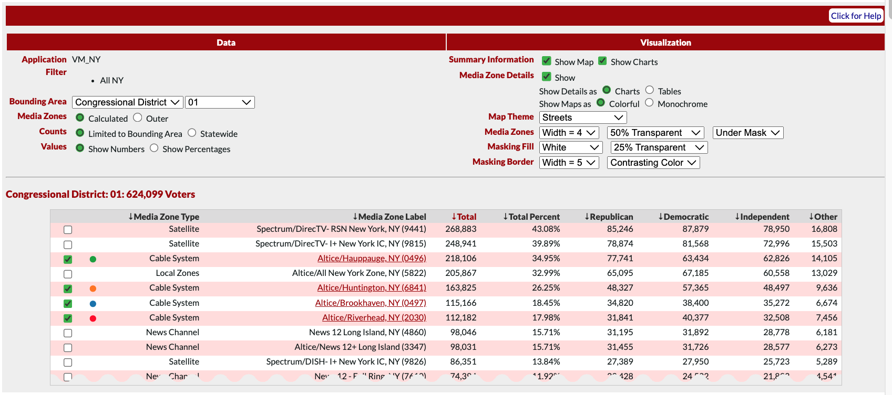
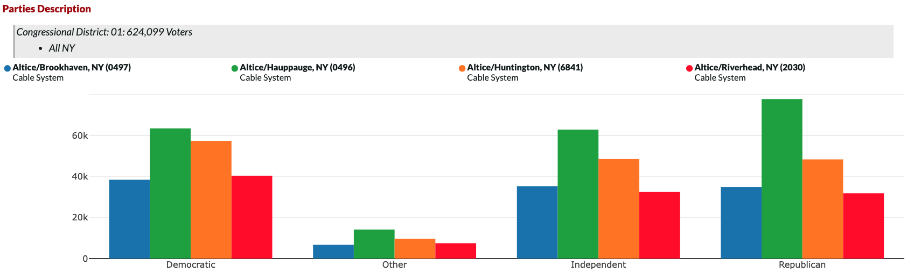
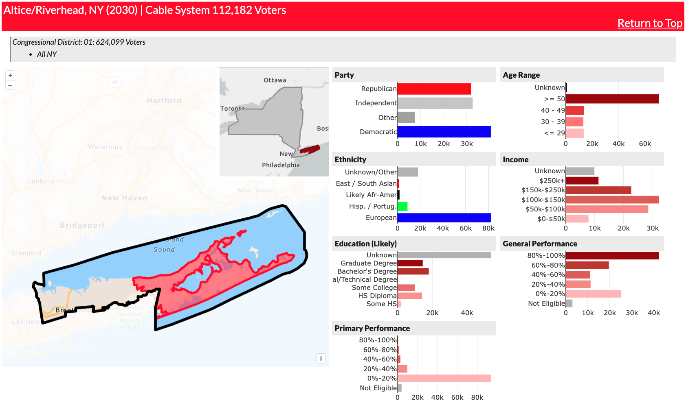

GIS Report Builder
Some screenshots from the project.
Selection Area
Allows non-technical users to enter complex preferences, and update the report instantly
Users select an area type, such as Congressional District, and an area, such as District 1. They can then select media zones within that area to compare, and customize the color of each selection. In addition to the data selections, users can modify the report in numerous ways. Including showing/hiding various sections, displaying charts vs. tables, and elements of the map style.
Summary Map
Allows users to compare geographic boundaries and coverage between media zones.
The summary map can be styled in the selection area (above). Users can change the zone and area masking, including changing the regions fill opacity and border width. All visualizations in the application include a filter set (the area with the grey background below "Summary Map"). This helps users minimize their chance of error by keeping track of their data queries. Below the filter set is a legend, which corresponds to the selections made above.

Example Summary Comparison Chart - Political Parties
Shows users the breakdown of political party affiliation between media zones.
In the live report, there are 10-15 of these summary charts with various data, including gender, race, income level, etc. The flexible framework on which the product was built allows for these charts to be added or removed easily, with only a few lines of HTML and a query to L2's API.
Media Zone Detailed View
Displays the individual zone geography and statistics.
This view allows users to see a detailed report of each individual zone. It includes a map, with both the area and zone boundaries, and the statistics table, with charts for each demographic.
